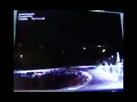

À Grenade sur l'Adour, Landes, 1 témoin observe 1 boule
couleur feu possédant plusieurs feux clignotants. Cette boule fait plusieurs va-et-vient, puis disparaît au bout de
30 sîn. Cette observation semble également avoir été faite par des pilotes SEPRA: PAN classé D.
à A Mens, Eure-et-Loir, un couple de
témoins observe un phénomène lumineux constitué d'une douzaine de points lumineux disposés selon un ovale et qui
tournent dans le sens des aiguilles d'une montre. Au centre du phénomène se trouvent 6 points lumineux fixes
environ. Aucun bruit n'est entendu. Bien que l'enquête n'ai pas pu l'établir, il est probable, d'après la
description qu'ils en font, que les témoins aient aperçu de très loin les effets d'un projecteur laser publicitaire
SEPRA: PAN classé B.
Le DoJ entame des poursuites à l'encontre Gary McKinnon pour
attaques d'ordinateurs gouvernmentaux.
A Argentat, Cantal, 1 témoin observe 1 lueur ressemblant à
une fusée qui se déplaçe à vive allure. L' apparition a duré environ 2 s SEPRA: PAN classé C.
Thanksgiving
Conformément à sa nouvelle politique de FOIA, le MoD publie sur son site Web des documents relatifs aux ovnis, dont ceux liés au cas
de Rendelsham.
Le météore filmé le 28 novembre

()2 cameras du réseau DMNS, à l'école de Kent Denver
dans Englewood et au lycée de Montrose, 2 autres d'un réseau "allsky" à Albuquerque et Platteville et 1 camera
de surveillance à Xilinx Corporation dans Longmont filment un météore.